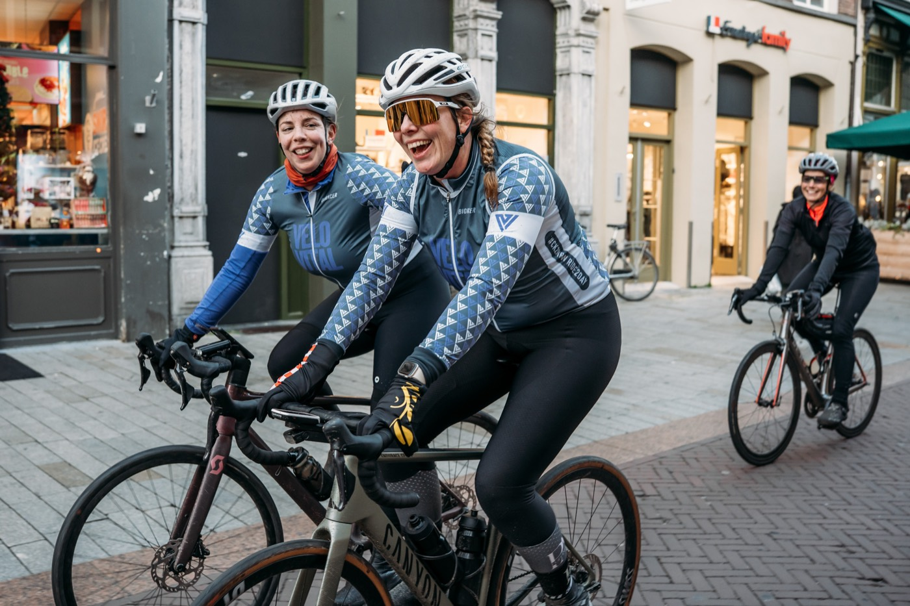
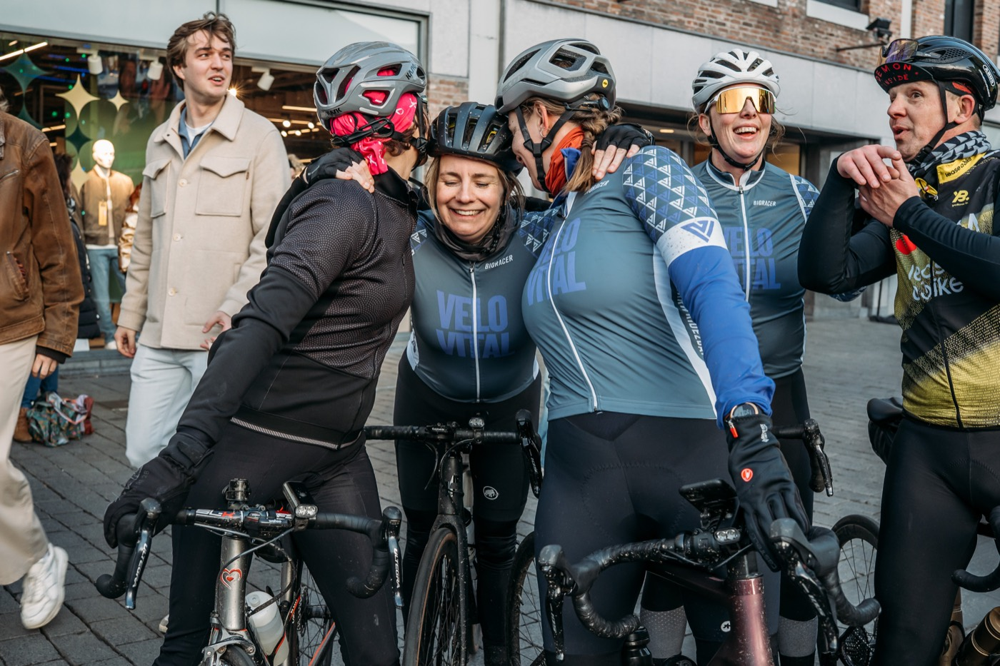
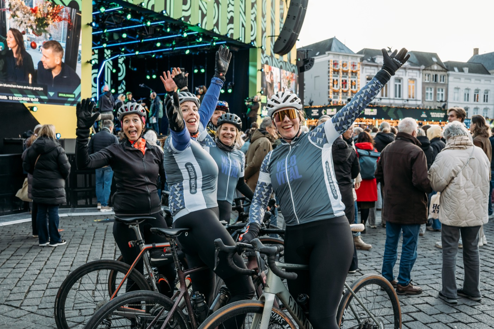
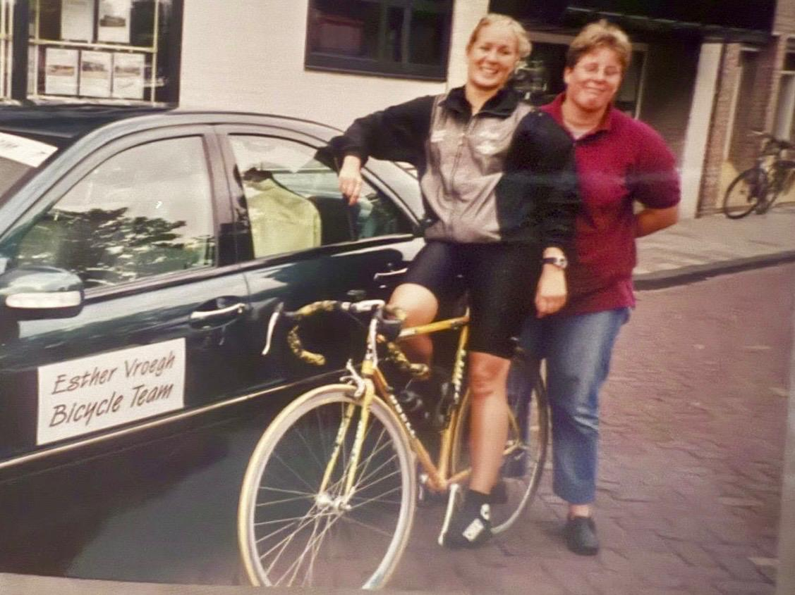

01
Je hebt al een fiets
Je zoekt mensen om samen mee te rijden. Gezellig, veilig en op jouw tempo.
Sluit je aan bij onze ritten en community
Voor vrouwen die voelen: ik wil meer bewegen. En dat liever samen doen dan alleen. Geen prestatiedruk. Wél plezier, verbinding en frisse lucht.
Al 75+ vrouwen rijden mee in 's-Hertogenbosch
Of je nou al jaren fietst of nog nooit op een racefiets zat. Er is een plek voor jou.
Je zoekt mensen om samen mee te rijden. Gezellig, veilig en op jouw tempo.
Je wilt beginnen, samen met anderen, zonder meteen honderden euro's uit te geven.
Word community member via velovital.nl. Geen verplichtingen, geen prestatiedruk.
We kijken naar je ervaring, tempo en wensen. En regelen als je wilt een leenfiets op maat.
Rustige, veilige fietsmomenten met andere vrouwen. Samen starten, samen volhouden.
Je eigen fiets, vast lid van Velo Vital of door naar Vrouwenwielrennen Den Bosch. Jij kiest.
Voor veel vrouwen is de eerste stap groot: een fiets is duur, techniek voelt onbekend, en de sportcultuur kan prestatiegericht aanvoelen. Wij halen die drempels weg.
Een herkenbare groep vrouwen die met je meerijdt en je opvangt. Nooit meer in je eentje twijfelen.
Plezier boven kilometers. We rijden op jouw tempo. Beginners meer dan welkom.
Fietschecks, onderhoud en begeleiding zijn geregeld. Jij stapt op, wij zorgen dat het klopt.
Eerst proberen met een leenfiets. Bevalt het? Dan pas beslis je over een eigen fiets.
Echte vrouwen, echte ritten, echt plezier in en rond 's-Hertogenbosch.



Instappen kost je niets. Wil je meer? Kies een abonnement dat bij jou past. Maandelijks opzegbaar.
Gratis
Word member via velovital.nl
€39,95/mnd
Inclusief fiets, meteen starten
€69,95/mnd
Alles, plus extra aandacht
Twijfel je nog? Begin gewoon gratis en beslis later.
Echte verhalen van vrouwen die op de fiets stapten. Klik op een verhaal en lees het hele verhaal.

Het beginHoe een felgele racefiets uit een garage het startpunt werd van een community die vrouwen op de fiets krijgt.
Startte met een fiets van Velo Vital en kreeg al snel het wielervirus te pakken. Inmiddels heeft ze een eigen racefiets en ging ze bikepacken naar Zeeland.
Werd als penningmeester door Esther en Marianne op een fiets gezet. Tijdens haar eerste wielerevenement moest iemand haar nog vertellen dat een string onder je fietsbroek geen goed idee is.
Haar vriendinnen fietsten al. Door rugklachten twijfelde ze of het iets voor haar was. Met een fiets van Velo Vital kon ze dat eerst rustig ontdekken.
Absoluut. Velo Vital is er juist voor vrouwen die (opnieuw) beginnen. We rijden op rustig tempo, zonder prestatiedruk, en je start nooit alleen.
We regelen een leenfiets die bij je past, voor één tot drie maanden. Zo ervaar je zonder grote investering hoe fijn regelmatig fietsen is. Daarna help we je met een passende vervolgstap.
Community member worden is gratis. Wil je een fiets inbegrepen, inclusief onderhoud en fietscheck? Dan kies je een abonnement vanaf €39,95 per maand. Maandelijks opzegbaar.
In en rond 's-Hertogenbosch. Startpunten en routes delen we in de community, altijd veilig en op afgestemd niveau.
Dat is precies waarom we bestaan. Je wordt gekoppeld aan een groep en aan een fietsmaatje. Niemand rijdt hier alleen.
Word gratis community member en rijd deze week nog mee. F#CK TMRW. Ride2day.
We nemen snel contact op om je eerste ride te plannen. Tot snel op de fiets. 🚴♀️